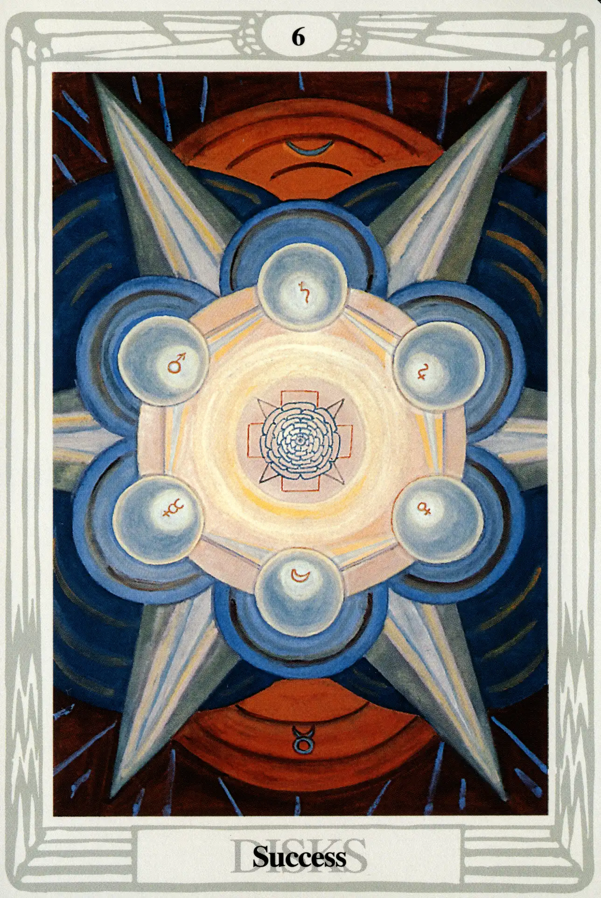

Disks
Six of Disks
Success

(Moon in Taurus)
10° to 20° Taurus
May 1 to May 10
Original Title: Lord of Material Success.
Golden Dawn Model: From clouds at the bottom of the card, a hand appears holding a rose branch with white roses and buds, each of which touches a disk. Disks are arranged in two columns of three each, thus:
Princess Scale for Tiphareth: Gold Amber.
The Four Scales for Moon: Blue; Silver; Cold Pale Blue; Silver, rayed Sky Blue.
The Four Scales for Taurus: Red Orange; Deep Indigo; Deep warm Olive; Rich Brown.
Formula: 6 (Tiphareth) of Disks (Assiah) + Moon in Taurus = SUCCESS
All things considered, things don't get any better than this in the suit of Disks. The Moon is exalted in Taurus and eminently happy to be there. As change is the Moon's primary characteristic, however, we may not have much time to enjoy our success. On the other hand, Tiphareth, as always, comes to the rescue:
It represents consciousness in its most harmonized and balanced form; definitely in form, not only in idea, as in the case of the number Two. In other words, the Son is an interpretation of the Father in terms of the mind.
For this reason, it is interesting to compare this card with the Ace of Disks, because, in a very real sense, the Six of Disks is an interpretation of the Ace of Disks in terms of the mind. In this, the most earthy and material suit, six (Tiphareth) applies its noble and stable influence toward practical ends—it is a brief reward for the tireless (if somewhat mindless) hands-on labor of the entrepreneur.
The basic image is that of the hexagram we found on the white section of the lower arm of the Hermetic Rose Cross (see chapter 8)—the Sun surrounded by the other six planets of the ancients. Here the Sun of Tiphareth is represented by the rose of forty-nine petals crucified upon a cross of five squares. This device, long associated with the Sun in magical and Masonic symbolism, is surrounded by three concentric rings of golden yellow, salmon-pink, and amber, which, in some reproductions, are hard to see.
In a tarot reading, this card acts somewhat like a Midas touch—bringing to neighboring cards the prospect of actually manifesting their qualities on the material plane.